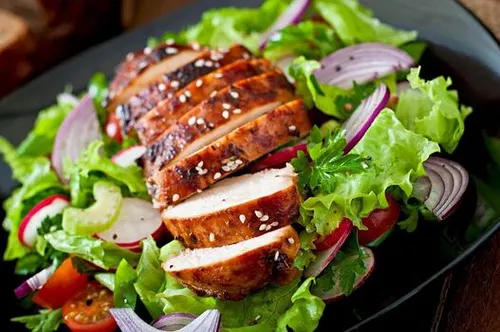
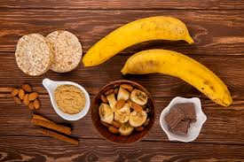
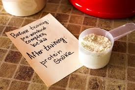
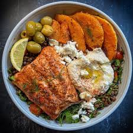

Cutting Plan
Cutting is a phase in fitness where the main goal is to lose body fat while keeping as much muscle as possible. This is done by eating fewer calories than the body needs, which is called a calorie deficit. Usually, a small deficit of around 300–500 calories works best because it allows fat loss without making you feel weak or tired all the time. While calories control weight loss, macros decide how your body looks during the cut. Eating enough protein is very important because it helps protect muscle and keeps you full for longer. Fats and carbohydrates are also needed in the right amounts to support energy levels, workouts, and overall health. When calories and macros are managed properly, cutting becomes easier to follow and gives better long-term results.
Calorie Deficit
- Eat 300–500 calories below maintenance
- Prevents muscle loss and metabolic slowdown
- Calories decide fat loss vs weight loss
Protein (Most Important Macro)
- 1.6–2.2 g per kg body weight
- Preserves muscle mass
- Increases satiety and recovery
Fats
- 20–30% of total calories
- Supports hormones and overall health
- Avoid eliminating fats completely
Carbohydrates
- Remaining calories after protein and fat
- Fuels workouts and maintains strength
- Portion control is key, not elimination
Sample Cutting Meal Plan
🥣 Breakfast
- Oats (40–50 g)
- Whey protein / 4 egg whites + 1 whole egg
- Berries or banana

🥗 Lunch
- Grilled chicken breast or tofu (150–200 g)
- Quinoa or brown rice (50–75 g)
- Mixed vegetables (steamed or roasted)

🍲 Snack
- Greek yogurt (low-fat)
- Almonds or walnuts (a small handful)
- Apple or carrot sticks

🥜 Pre-Workout
- Banana or rice cakes
- Peanut butter (1–2 tbsp)

🍛 Dinner
- Baked salmon or lentils (150–200 g)
- Sweet potato (100 g)
- Steamed broccoli or asparagus
